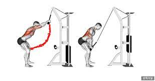

모두가 원하는 역삼각형의 몸매!
그 역삼각형을 이루는 근육이 바로 광배근이다. 광배근은 상체에서 강한 힘을 쓰는 근육이자
실생활에서도 필수적으로 쓰인다. 또 광배근은 상체에서 가장 큰 근육이며 하체와 더불어
우리 몸의 기둥이 되는 근육이다. 그리고 광배근은 흉요근막이라는 근막에 붙어서 힘을
쓰는데 엉덩이 근육과 붙어있어 팔과 다리로 강함 힘을 쓸 때 허리를 감싸는 흉요근막을
단단히 조여서 허리를 보호하도록 되어있다.
초보자의 경우 부상을 방지하기 위해 한가지 운동을 추천하겠다.

기본적으로 가슴을 열어주어 등을 일자로 펴 굽은 현상을 방지하고, 등에 자극을 집중하게한다.
적정한 무게를 설정하고 어깨 관절만 사용하여 팔을 위에서 아래로 내리면서 광배에 자극을 찾는다.
이때 초보자들은 팔을 너무 높이 올리지말고 어깨라인까지만 올리는 연습 후 본인의 가동범위에
맞게 잘 설정해서 운동을 한다.
그리고 팔꿈치를 바깥으로 보게 살짝 틀어주고 팔은 살짝 구부린다.
이 상태에서 바-손목-팔꿈치-어깨까지의 팔 길이가 풀 다운시 줄어들지 않도록 일정한 간격을
유지하며 내려오고 팔이 더 짧아지거나, 더 길어지면 광배근의 사용보다는 팔근육이 더 사용되기
때문에 광베근에 많이 집중하기 어렵다.